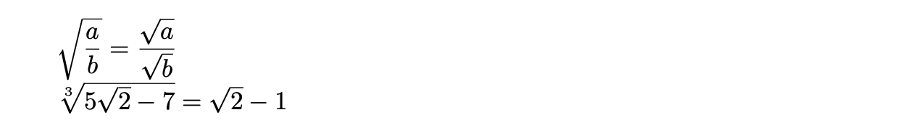
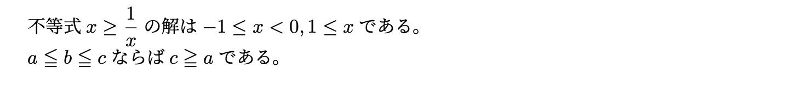
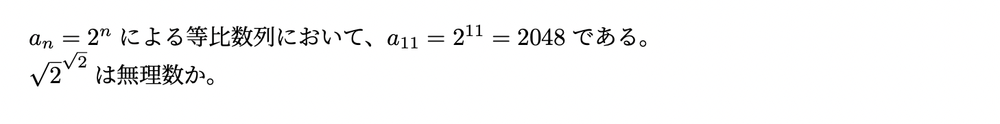

Macの場合
Windowsの場合
どんどんコマンドを紹介して練習していきます。このページではプラスマイナス・平方根・不等号・上付き下付き・特殊文字と、なかなか量が多いですが 1つ1つしっかり頭に入れていきましょう！
まず、平方根は\sqrt{**}とすればできます。プラスマイナスは簡単で、複号同順にも対応しています。次の例を見てみましょう。
原点中心の単位円と直線$y=-2x$の交点は
$(\pm\dfrac{1}{2},\mp\dfrac{\sqrt{3}}{2})$ (複号同順)である。
プラスマイナスについては、\pm, \mp によって出力することができます。また、\sqrt{} については次のような汎用性があります。
$\sqrt{\dfrac{a}{b}}=\dfrac{\sqrt{a}}{\sqrt{b}}$\\
$\sqrt[3]{5\sqrt{2}-7}=\sqrt{2}-1$

1つ目について、\sqrt{}は自動で分数の大きさに調節してくれることがわかります。
2つ目について、\sqrt[3]{}とすることで3乗根を表すことができます。この3を置き換えればルートの左上に任意の文字列を入れることができます。
不等式は単純にコマンドを覚えてしまえばいけます。
\usepackage{amssymb} (プリアンブルに)
不等式$x\geq\dfrac{1}{x}$の解は$-1\leq x<0,1\leq x$である。\\
$a\leqq b\leqq c$ならば$c\geqq a$である。

>,< はそのまま打ち込めばよく、下が1本の不等号なら\geq, \leqになります。 高校までの数学でよく使われる下が2本の不等号はqを重ねて\geqq, \leqqになります。これを利用する際は amsmath のように amssymb を読み込んでおく必要があります。
累乗や番号を付ける際の上付き下付き文字は ^, _ を用いて表すことができます。これにもルールがあるので見てみましょう。
$a_n=2^n$による等比数列において、$a_{11}=2^{11}=2048$である。\\
$\sqrt{2}^{\sqrt{2}}$は無理数か。

複数文字を上付き下付きにする場合は { } で囲む必要があります。ここには平方根のようなコマンドも入れることができます。
そこそこ使うであろうギリシャ文字を紹介します。1文字目を大文字にすればギリシャ文字も大文字になります。
| \alpha | \( \alpha\) | \theta | \( \theta\) |
| \beta | \( \beta\) | \pi | \( \pi\) |
| \gamma | \( \gamma\) | \phi | \( \phi\) |
| \delta | \( \delta\) | \varphi | \( \varphi\) |
| \Delta | \( \Delta\) | \xi | \( \xi\) |
| \epsilon | \( \epsilon\) | \sigma | \( \sigma\) |
| \varepsilon | \( \varepsilon\) | \Sigma | \( \Sigma\) |